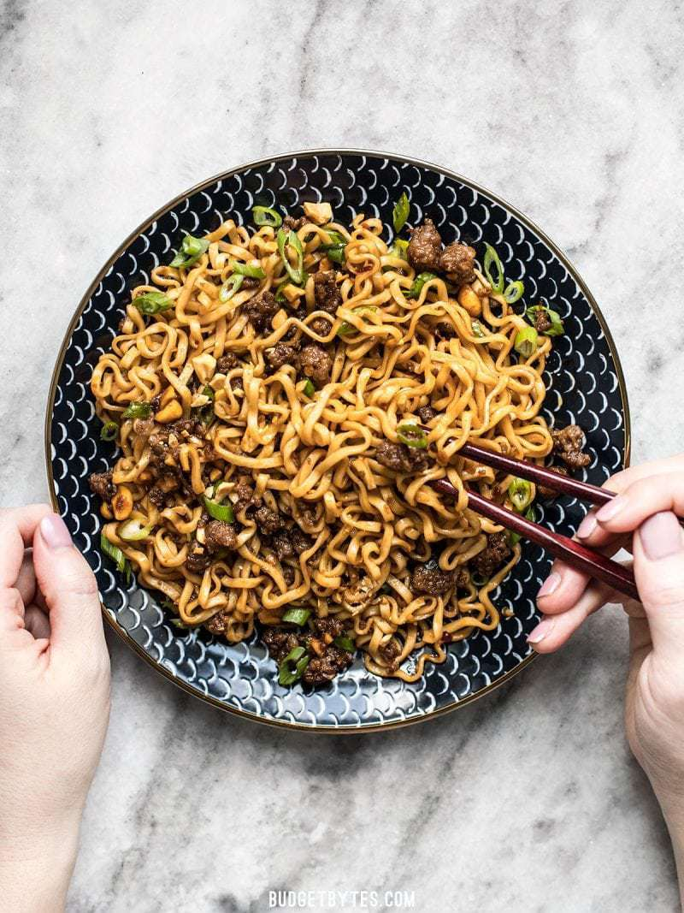

Pork and Peanut Dragon Noodles

Description
Sweet, salty, rich, and crunchy,
these Pork and Peanut Dragon Noodles hit all the bases.
It’s fast, easy comfort food for busy nights!
Ingredients
Dragon Sauce
- 1/4 cup chili garlic sauce
- 1/4 cup soy sauce
- 1/4 cup brown sugar
Pork and Noodles
- 1/2 lb. ground pork
- 2 3oz. packages ramen noodles (remove seasoning packet)
- 3 green onions, sliced
- 1/4 cup unsalted peanuts, chopped
Instructions
- Combine the chili garlic sauce, soy sauce, and
brown sugar in a bowl.
- Add the ground pork to a skillet and cook over
medium heat until it is fully browned. Once browned,
add the prepared dragon sauce and chopped peanuts.
Allow the pork and peanuts to simmer in the sauce for
another 5 minutes, or until the sauce has reduced by half.
- While the pork is browning, begin boiling water for
your noodles. Once boiling, add your noodles and
cook according to package directions. Drain the
noodles in a colander.
- Once the sauce has reduced and the noodles have drained,
add the noodles to the skillet and toss until everything
is combined and coated in sauce. Top with sliced green
onions and serve!